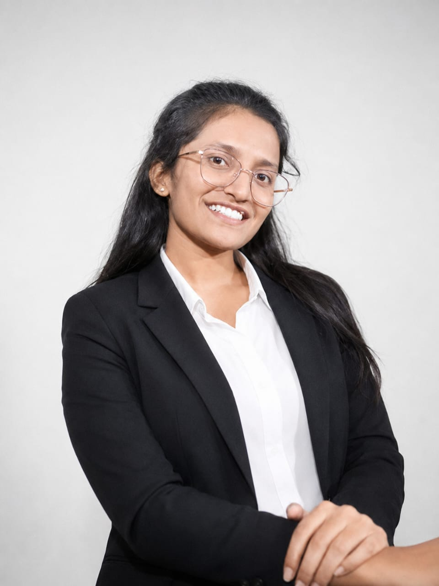
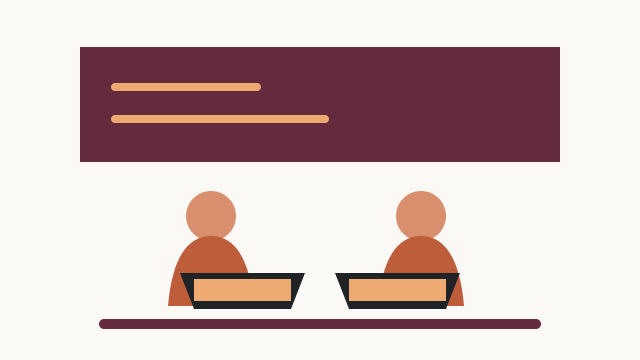

Engineering
& technology
Develop the skills to solve complex problems and shape the systems of tomorrow.
↗Sumathi Reddy Institute of Technology for Women
A focused learning community near Ananthasagar, Warangal, helping young women turn curiosity into confidence, capability, and meaningful careers.

At SRITW, education goes beyond the classroom. We create space for women to ask better questions, make things that matter, and grow into thoughtful professionals who are ready for the world.
Explore our approachWhen women learn together, they create possibilities for everyone.
— The SRITW communityLearn by doing
Explore a learning environment where strong fundamentals meet practical experience, collaboration, and a clear view of what comes next.
Our campus near Ananthasagar gives students a calm, connected place to learn, collaborate, and discover their own rhythm.
Plan a visitExplore the campus
From focused study to shared celebrations, SRITW gives students welcoming spaces to learn, connect, and take part.
A quiet place for reading, online research, note-making, and independent study, helping students turn information into insight.
E-books / Digital research / Laptop study Read, research, return stronger
Collaborative spaces where students discuss ideas, share screens, build projects, and learn by solving practical problems together.
Laptops / Coding practice / Team projects Learn together, build together
Campus life includes cultural celebrations, music, dance, theatre, rangoli, festivals, technical sessions, and student showcases.
Cultural fests / Music and dance / Tech showcases Meet, make, celebrateCampus environment
Near Ananthasagar, the SRITW campus brings learning and nature together. Students have space to focus, meet friends, take part in activities, and build confidence in a welcoming environment.

From campus to career
SRITW helps students move towards meaningful careers through practical learning, communication practice, technical preparation, and opportunities to present their work with confidence.
Your next chapter starts here
Visit us near Ananthasagar, Warangal
and meet the people behind SRITW.